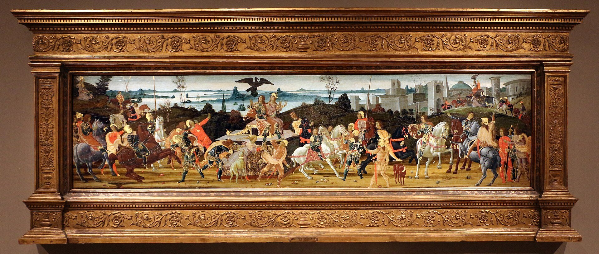

Lives in Focus: Tanaquil (600–575 BCE): Part 2
Jacopo del Sellaio
The story of Tarquinius Priscus’ rise to the throne in Rome intrigued many both in ancient Rome and subsequently. Here it is depicted in a painting made in the fifteenth century.
The story flows as a narrative from left to right across the long panel.
Interestingly, this panel was once part of a bridal chest; these were often richly decorated with instructional stories about dutiful wives.

Jacopo del Sellaio (Italian, c. 1441–1493). Tarquinius Priscus Entering Rome, c. 1470. Tempera on wood, mounted on canvas; framed: 81.9 x 202.2 x 11.4 cm (32 1/4 x 79 5/8 x 4 1/2 in.); unframed: 41 x 165.4 cm (16 1/8 x 65 1/8 in.). The Cleveland Museum of Art, Bequest of John L. Severance, 1942.646 [Public Domain]
This panel tells several stories at once that relate to the history of Tanaquil as it was known in the fifteenth century in Italy.
Originally, it was painted as part of a bridal chest which explains its long rectangular form. Del Sellaio takes his material from Livy’s account, but provides an alternative interpretation to the hostile one that Livy seems to present. The artist depicts Tanaquil as a dutiful wife who provides support to her husband.
On the left, we can see Tanaquil reading the eagle that takes Tarquinius’s hat, as a good omen. Tanaquil, using the action of the bird, judges that his action will be successful and encourages him on.
In fact, there is another well-known, ancient Roman source, Pliny the Elder’s Natural History [Naturalis historia], about Tanaquil that was far more favourable about her activities. It is possible that Del Sellaio was aware of it.
Pliny the Elder wrote his natural history around 50 BCE, so a little before Livy’s history. Natural history was quite a bit more expansive than we think of it today, and Pliny packed in a great deal of contemporary information about the world around him over 37 books.
All the same, there is no ‘history’ section as such, so why was Tanaquil mentioned in a natural history, and in the Eighth Book which is given over to discussion of the “nature of terrestrial animals”?
Let’s take a look at the short passage where Tanaquil appears.
Read
Pliny, Natural History [Naturalis historia], 8: 74.
[The Natural History of Pliny, trans. John Bostock and H.T. Riley, vol. 2 (London: Henry G. Bohn, 1855), pp. 336–38.]
https://www.gutenberg.org/files/60230/60230-h/60230-h.htm#BOOK_VIII_CHAP_73
CHAP. 74.—DIFFERENT KINDS OF CLOTHS.
Varro informs us, he himself having been an eye-witness, that in the temple of Sancus,2015 the wool was still preserved on the distaff and spindle of Tanaquil,2016 who was also called Caia Cæcilia; and he says that the royal waved2017 toga, formerly worn by Servius Tullius, and now in the temple of Fortune, was made by her.
Hence was derived the custom, on the marriage of a young woman, of carrying in the procession a dressed distaff and a spindle, with the thread arranged upon it. Tanaquil was the first who wove the straight tunic,2018 such as our young people wear with the white toga;2019 newly-married women also. Waved garments were at first the most esteemed of all: after which those composed of various colours2020 came into vogue. Fenestella informs us, that togas with a smooth surface, as well
p. 337as the Phryxian togas,2021 began to be used in the latter part of the reign of Augustus. Thick stuffs, in the preparation of which the poppy2022 was used, are of more ancient date, being mentioned by the poet Lucilius, in his lines on Torquatus. The prætexta2023 had its origin among the Etrurians. I find that the trabea2024 was first worn by the kings; embroidered garments are mentioned by Homer,2025 and in this class originated the triumphal robes.2026
The Phrygians first used the needle for this purpose,2027 and hence this kind of garment obtained the name of Phrygionian. King Attalus, who also lived in Asia, invented the art of embroidering with gold, from which these garments have been called Attalic.2028 Babylon was very famous for making embroidery in different colours, and hence stuffs of this kind have obtained the name of Babylonian.2029 The method of weaving cloth with more than two threads was invented
p. 338 at Alexandria; these cloths are called polymita;2030 it was in Gaul that they were first divided into chequers.2031 Metellus Scipio, in the accusation which he brought against Cato,2032 stated that even in his time Babylonian covers for couches were selling for eight hundred thousand sesterces, and these of late, in the time of the Emperor Nero, had risen to four millions.2033
The prætextæ of Servius Tullius, with which the statue of Fortune, dedicated by him, was covered,2034 lasted until the death of Sejanus; and it is a remarkable fact, that, during a period of five hundred and sixty years, they had never become tattered,2035 or received injury from moths. I myself have seen the fleece upon the living animal dyed purple, scarlet, and violet,—a pound and a half2036 of dye being used for each,—just as though they had been produced by Nature in this form, to meet the demands of luxury.
NOTES
2015 This deity was also called Sangus, or Semo Sancus; and Ovid, Fasti, B. vi. c. 216, et seq., gives us much information concerning him. He was of Sabine origin, and identical with Hercules and Dius Fidius. If we may judge from the derivation of the name, it is not improbable that he presided over the sanctity of oaths. His temple at Rome was on the Quirinal, opposite to that of Quirinus, and near the gate which from him derived the name of “Sanqualis porta.” He was said to have been the father of the Sabine hero Sabus.
2016 According to the commonly received account, Tanaquil was the wife of Tarquinius Priscus, and a native of Etruria; when she removed to Rome, and her husband became king, her name was changed to Caia Cæcilia.—B.
2017 “Undulata;” it has been suggested that this means the same as our stuffs which we term “watered.”—B.
2018 “Tunica recta;” according to Festus, it was “so called from being woven perpendicularly by people standing.”—B. It probably means woven from top to bottom and cross-wise in straight lines.
2019 “Toga pura;” so called from being white, without a mixture of any other colour.
2020 “Sororiculata;” there is much uncertainty respecting the derivation of this word and its meaning, but it is generally supposed to signify some kind of stuff, composed of a mixture of different ingredients or of different colours.—B. “Orbiculata,” “with round spots,” is one reading, and probably the correct one.
2021 According to Hardouin, these were cloths which imitated the crisp and prominent hair of the Phryxian fleece, Lemaire, vol. iii. p. 529. Some editions read “Phrygianas.”
2022 “Papaverata;” there is considerable difficulty in ascertaining the meaning of this word, as applied to garments. Pliny, in two other passages, speaks of a certain species of poppy—“from this, linens receive a peculiar whiteness,” B. xix. “From this, linens receive a brilliant whiteness in time,” B. xx. c. 78. It would appear, in these cases, that the fibres of the stem of the poppy were mixed with the flax; though, perhaps, this would be scarcely practicable with wool.—B.
2023 The prætexta is described by Varro as a white toga, with a purple band; it was worn by males, until their seventeenth year, and by young women until their marriage.—B.
2024 The trabea differed from the prætexta, in being ornamented with stripes (trabes) of purple, whence its name.—B.
2025 Helen is introduced, Il. B. iii. l. 125, weaving an embroidered garment, in which were figured the battles of the Greeks and Trojans. It was probably somewhat of the nature of modern tapestry.—B.
2026 See B. ix. c. 60.
2027 This passage, in which the needle is said to have been used, proves that when the word “pictæ” is applied to garments, it is equivalent to our term “embroidered.”—B.
2028 Pliny refers to the “Attalica tunica,” B. xxxiii. c. 29, and to the “Attalica vestis,” B. xxxvi. c. 20, and B. xxxvii. c. 6; Propertius speaks of “Attalica aulæa,” B. ii. c. 32, l. 12, “Attalicas torus,” B. ii. c. 13, l. 22, and B. iv. c. 5, l. 24, and “Attalicæ vestes,” B. iii. c. 18, l. 19.—B.
2029 Plautus, Stich. A. ii. s. 2, l. 54, speaks of “Babylonica peristromata, consuta tapetia,” “Babylonian hangings, and embroidered tapestry;” and Martial, B. viii. Ep. 28, l. 17, 18, of “Babylonica texta,” “Babylonian textures.”—B.
2030 From Martial’s epigram, entitled “Cubicularia polymita,” B. xiv. Ep. 150, we may conclude that the Egyptian polymita were formed in a loom, and of the nature of tapestry, while the Babylonian were embroidered with the needle. Plautus probably refers to the Egyptian tapestry, in the Pseud. A. i. s. 2, l. 14, “Neque Alexandrina belluata conchyliata tapetia”—“Nor yet the Alexandrine tapestries, figured over with beasts and shells.”
2031 “Scutulis divider.” This term may mean “squares,” “diamonds,” or “lozenges,” something like the segments into which a spider’s web is divided. It is not improbable that he alludes here to the plaids of the Gallic nations.
2032 We have an account of this contention in Plutarch, and we may presume that this accusation was produced at that time.—B.
2033 The first sum amounts to about £4,600 sterling, the latter to £23,000.—B.
2034 The following lines in Ovid, Fasti, B. vi. l. 569, et seq., have been supposed to refer to this temple, and prove that the account of it is correct. “Lux eadem, Fortuna, tuaque est, auctorque, locusque. “Sed superinjectis quis latet æde togis? “Servius est....” “The same day is thine, O Fortune; the same the builder, the same the site. But who is this that lies hid beneath the garments covering him? It is Servius.”
2035 Perhaps “changed their colour” may be a better translation of “defluxisse.”
2036 “Sesquipedalibus libris.” It seems impossible to translate this literally. Hardouin explains it by supposing that the fleeces were dyed in strips of three colours, each strip being half a foot in breadth, and that three of these required a pound of the dyeing materials.—B.
Tanaquil is of interest to Pliny because, he says, she wove and wore the first straight tunic [tunica recta], part of the ensemble of the toga.
This gave her a very important contribution to ancient Roman life, indeed a very significant one as the toga became the style of dress for everyone in time. Yet, at the same time, it confined Tanaquil’s importance to an aspect of Roman life that was respectable for well-born women in ancient Rome – weaving arts in the home.
Reflect
Pliny the Elder seems to turn Tanaquil into a role model – a role model of what?
Which version of the ancient Tanaquil story do you think inspired Del Sellaio? Or perhaps both in different ways?
Tanaquil appears to play a pivotal role in contributing Etruscan influences, whether of political power or dress style, to life in ancient Rome as seen by its own authors.
The ancient Roman city held different views about how women and men should interact with public-facing systems of power and their views about Tanaquil’s activities, our only source for them, should be read with this cultural context in mind.
Read
For more on women in Etruscan culture, you may like to read:
Larissa Bonfante Warren, ‘The Women of Etruria,’ Arethusa 6, 1 (1973): 91–101.
NB. This article uses the word Etrurian to describe the people we term Etruscan in this module.
https://www.jstor.org/stable/26307465
[This article is available to read free online with an account]
Larissa Bonfante, ‘The Language of Dress: Etruscan Influences,’ Archaeology 31, 1 (1978): 14–26.
https://www.jstor.org/stable/41726854
[This article is available to read free online with an account]
For more on how ancient Roman authors saw and ‘othered’ people from elsewhere and the past, see:
Maria Beatrice Bittarello, ‘The Construction of Etruscan “Otherness” in Latin Literature’, Greece & Rome, Second Series 56, 2 (2009): 211–33.
https://www.jstor.org/stable/40389197
[This article is available to read free online with an account]
For Livy’s presentation of other women involved in Roman political life in his History:
Tom Stevenson, ‘Women of Early Rome as “Exempla” in Livy, Ab Urbe Condita, Book 1,’ The Classical World 104, 2 (2011): 175–89 [on Tanaquil specifically, see pp. 183–4]
http://www.jstor.org/stable/25799994
[This article is available to read free online with an account]
Jo-Marie Claassen, ‘The Pivotal Role of Women in Livy’s Narrative of Political Development in Early Rome,’ Acta Classica 41 (1998): 71–103 [on Tanaquil specifically, see pp. 85–6]
http://www.jstor.org/stable/24595414
[This article is available to read free online with an account]
S.E. Smethurst, ‘Women in Livy’s “History”,’ Greece & Rome, First Series 19, 56 (1950): 80–7.
https://www.jstor.org/stable/641096
[This article is available to read free online with an account]